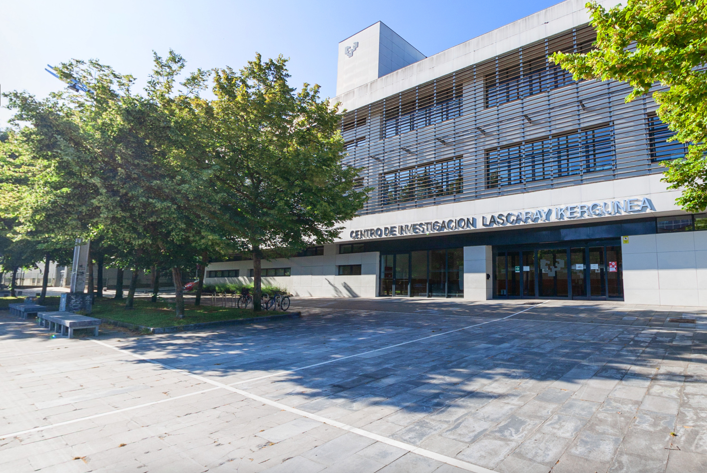

Contact
Let’s connect.
For research collaborations, available positions and other enquiries.
Find us
ArchaeoBiomiCs EHU
Department of Zoology and Animal Cell Biology
University of the Basque Country
Euskal Herriko Unibertsitatea · EHU
Centro de Investigación "Lascaray"
Avda. Miguel de Unamuno, 3
01006 Vitoria-Gasteiz, Spain
Get in touch
Email: biomicsresearchgroup@gmail.com
Phone number: (+34)945014528
